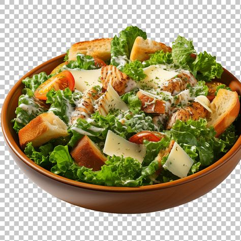
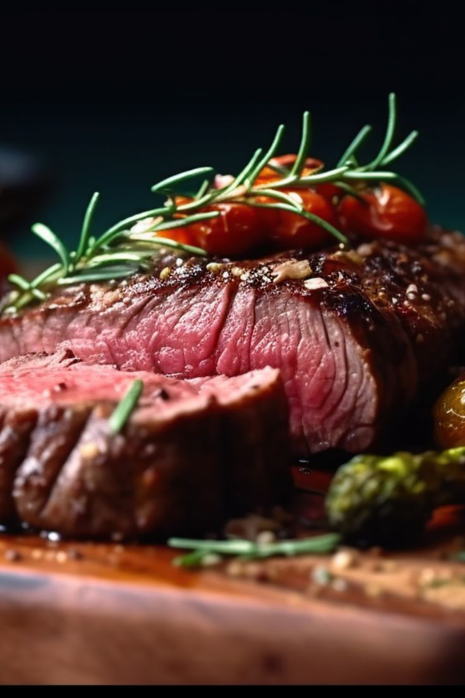
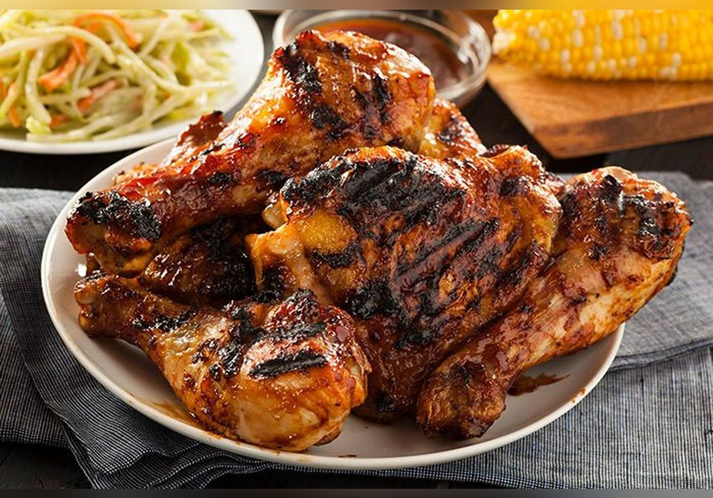
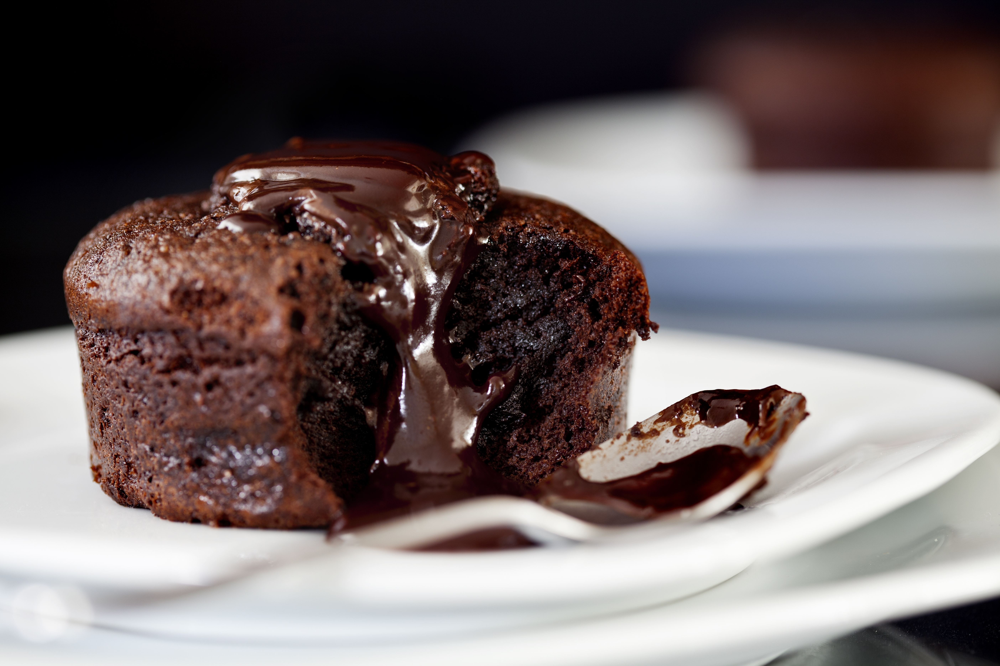

Notre Menu
ENTREES
- Saucisse grillées 1200F
- soupe à l'oignon 700F
- Salade César 1000F

Saucisse grillée – Une saucisse juteuse et savoureuse, dorée à la perfection sur le gril, offrant une texture légèrement croustillante à l’extérieur et tendre à l’intérieur. Elle est souvent accompagnée de moutarde, de sauce barbecue ou d’herbes aromatiques pour rehausser son goût fumé. Servie seule, avec du pain, ou accompagnée de frites et de salade.

Une soupe traditionnelle française préparée avec des oignons lentement caramélisés, mijotés dans un bouillon savoureux, puis gratinée au four avec une couche de fromage fondu sur une tranche de pain croustillant. Un plat réconfortant au goût riche et légèrement sucré.

Un plat sénégalais emblématique composé de poisson mariné et frit, accompagné de riz parfumé cuit dans une sauce tomate épicée. Agrémenté de légumes comme le chou, la carotte et le manioc, il offre un mélange de saveurs riches et authentiques, typique de la cuisine ouest-africaine.
PLATS PRINCIPAUX
- Thiébou djién 1300F
- Filet de boeuf 2500
- Poulet grillé 3000F

Un plat sénégalais emblématique composé de poisson mariné et frit, accompagné de riz parfumé cuit dans une sauce tomate épicée. Agrémenté de légumes comme le chou, la carotte et le manioc, il offre un mélange de saveurs riches et authentiques, typique de la cuisine ouest-africaine.

Un morceau tendre et raffiné de bœuf, connu pour sa texture fondante et son goût délicat. Il est généralement grillé ou poêlé à la perfection, avec une cuisson au choix, et accompagné d’une sauce au poivre, aux champignons ou au beurre maître d’hôtel. Servi avec des légumes sautés, une purée onctueuse ou des frites dorées.

Un délicieux morceau de poulet mariné aux épices, grillé à la perfection pour une peau croustillante et une chair tendre et juteuse. Il est souvent accompagné d’une sauce au citron, à l’ail ou aux herbes, et servi avec des légumes rôtis, du riz parfumé ou des frites dorées.
DESSERTS
- Fondant au chocolat 700F
- Crème brulée 800F
- Profiteroles 1000F

moelleux au chocolat avec un coeur fondant et coulant accompagné d'une boule de glace à la vanille

Dessert à base de crème vanillée cuite et recouverte d'une fine couche de sucre caramélisé croquant
De petites choux garnis de crème patissère ou de glace à la vanille, nappés de chocolat